แปะก่าจู้ (Saju Kaaju)
เว็บแอปดูดวงสาจูเกาหลี (사주팔자) ที่แยก "คำนวณ" ออกจาก "เล่า" — Python engine คำนวณจากฐานดาราศาสตร์ KASI จริงแม่นระดับนาที แล้วให้อาแปะ (AI) เล่าเป็นภาษาคน อ่านดวงเป็นกระจกสะท้อนตัวเอง สร้างด้วย Next.js 15 + Supabase + Stripe · mobile-first · PWA
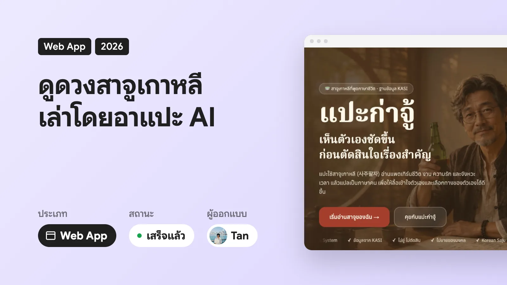
เว็บแอปดูดวงสาจูเกาหลี (사주팔자) ที่แยก "คำนวณ" ออกจาก "เล่า" — Python engine คำนวณ 4 เสาชะตาจากฐานดาราศาสตร์เกาหลี (KASI) จริง แม่นระดับนาที แล้วให้ อาแปะ (AI) เล่าเป็นภาษาคน อ่านดวงเป็นกระจกสะท้อนตัวเอง ไม่ฟันธง ไม่ขายความกลัว
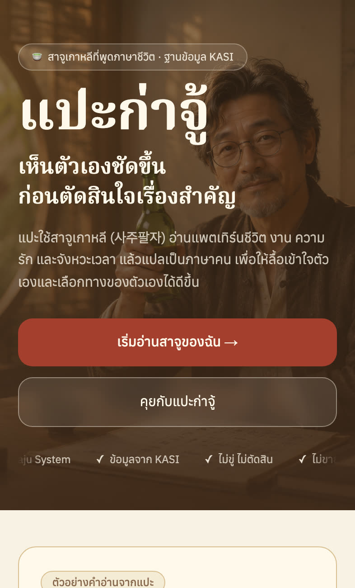
ปัญหาที่เจอ
ทำไมการ "ดูดวง" ออนไลน์ให้แม่นและอบอุ่นพร้อมกัน ถึงยากกว่าที่คิด?
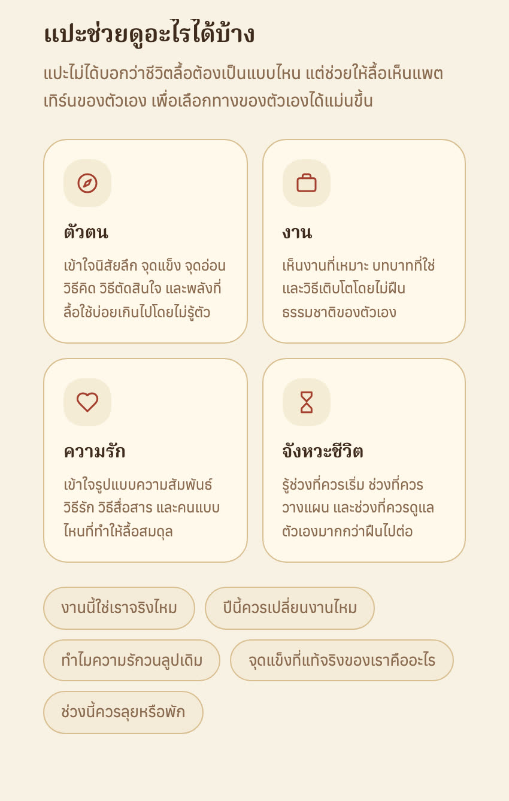
สาจูเกาหลี (四柱 — 4 เสาชะตา) คำนวณยากมาก: เสาปีขึ้นกับ 입춘, เสาเดือนขึ้นกับ 12 절기, เสาชั่วโมงต้องแก้ 진태양시 ตาม longitude เพราะเวลามาตรฐานเกาหลีอิงเส้นเมอริเดียนญี่ปุ่น (คลาดได้ ~32 นาที) พลาดนาทีเดียวเสาเปลี่ยน คำทำนายเพี้ยนทั้งใบ — แล้วถ้าปล่อยให้ AI คำนวณเอง มันก็ "มโน" ตัวเลข
ดูดวงออนไลน์ส่วนใหญ่ "ฟันธง" + ขายความกลัว
บอกว่าลื้อจะเป็นอย่างนี้แน่ ๆ แล้วปิดท้ายด้วยของมงคลให้ซื้อ — ไม่เหลือทางเลือกให้คนฟัง ไม่ได้ช่วยให้เข้าใจตัวเองจริง ๆ
คำนวณสาจูเกาหลีให้แม่นระดับนาที ยากมาก
ต้องรู้จัก 입춘/절기 boundary, แก้ 진태양시 ตาม longitude, แยก 야자시/조자시 — พลาดนาทีเดียวเสาวัน/เสาชั่วโมงเปลี่ยน
ให้ AI คำนวณดวงเอง = มโนเลข
โมเดลภาษาไม่ใช่เครื่องคิดเลขดาราศาสตร์ — ถามว่าเสาชั่วโมงคืออะไร มันเดา (hallucinate) ตอบผิดแบบมั่นใจ เชื่อไม่ได้เลย
ศัพท์ 오행 / 십신 / 격국 คนทั่วไปอ่านไม่รู้เรื่อง
ผลลัพธ์ของศาสตร์เป็นฮันจา/เกาหลีล้วน — ต่อให้คำนวณถูก ถ้าเล่าไม่เป็นภาษาคน คนก็ไม่ได้อะไรกลับไป
ต้องมี auth จริง + โควตา + จ่ายเงิน โดยกันโกง
ไม่ใช่แค่หน้า demo — ต้อง login จริง, นับโควตาคำถามแบบกันแก้ฝั่ง client, รับเงินผ่าน Stripe แล้วเติมโควตาให้ถูกต้องแบบ idempotent
วิธีแก้ปัญหา
แยก "เครื่องคำนวณข้อเท็จจริง" ออกจาก "คนเล่าเรื่อง" — engine แม่น ๆ ป้อน AI ที่พูดภาษาคน
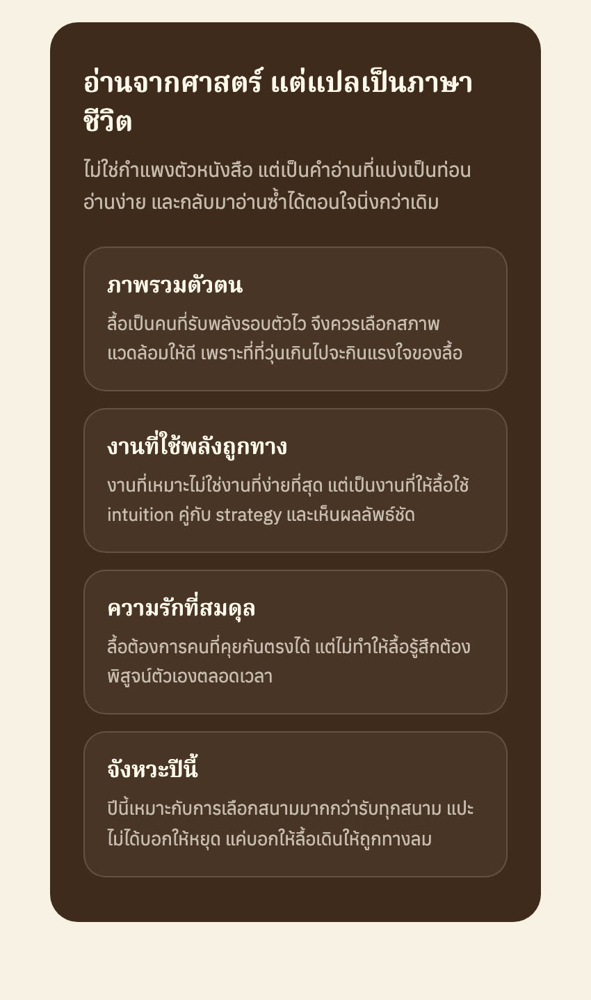
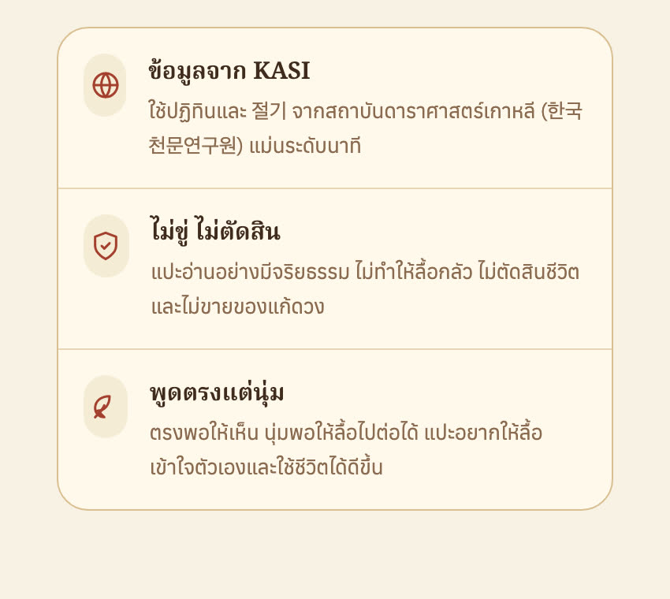
แยก "คำนวณ" ออกจาก "เล่า" — กัน hallucination
Python engine คำนวณ 4 เสา, 격국, 용신, forecast เป็น ข้อเท็จจริง → ส่งให้ AI แค่ "เล่าต่อ" ไม่ให้ AI แตะการคำนวณเลย ตัวเลขจึงเชื่อได้
"อาแปะ" — character voice อบอุ่น อ่านดวงเป็นกระจก
system prompt เป็นบุคลิกอาแปะชาวเกาหลี พูดตรงแต่มีเมตตา ไม่ขู่ ไม่ฟันธง ไม่ขายของมงคล — เหลือทางเลือกให้คนฟังเสมอ
เครื่องคำนวณสาจูเกาหลีของจริง (KASI)
ใช้ engine korean-saju ฝังข้อมูล KASI จริง แก้ 진태양시 ตาม longitude ของเมืองเกิด แม่นระดับนาที ครอบคลุมปฏิทินถึงปี 2050
ปฏิทินดวง personalized + cache รายวัน
forecast รายวัน/รายยามอิงดวงกำเนิดของแต่ละคน — deterministic จึง cache ต่อ user ต่อวันใน DB ได้ เปิดซ้ำไม่ต้องคำนวณใหม่
โควตา + จ่ายเงินฝั่ง server เท่านั้น
หักโควตาด้วย Postgres function แบบ atomic, เปิด RLS ทุกตาราง, เติมเงินผ่าน Stripe webhook แบบ idempotent — client แก้โควตาเองไม่ได้
วิธีทำงาน — 4 จังหวะ
ตั้งแต่กรอกวันเกิด จนอาแปะเล่าดวงให้ฟัง
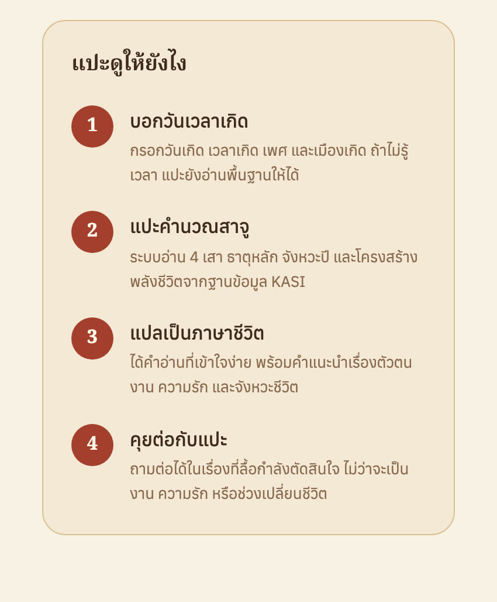
กรอกวันเกิด
Onboarding: วัน·เวลา·เมืองเกิด → ดึง longitude จาก city list
Engine คำนวณ
Python (KASI) คำนวณ 4 เสา + 격국/용신 → cache ลง DB
อาแปะเล่า
AI รับข้อเท็จจริงมาเล่าเป็นภาษาคน แบบ streaming เบสวันเกิด
ปฏิทิน + คุยต่อ
เปิดปฏิทินดวงรายวัน → คุยต่อ → หมดโควตา → เติม 99฿
Tech Stack & Architecture
Next.js เดียวจบ (web + api) บน Vercel · Python engine เป็น serverless function · Supabase คุม DB + Auth + RLS
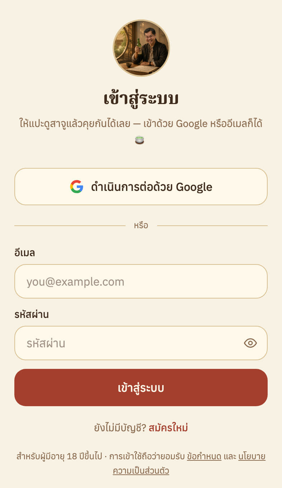
Next.js 15 App Router — web + API route + Python function อยู่ deploy เดียว แชร์ session ตรง ๆ · Supabase ตัวเดียวจบ Postgres + Google/Email Auth + merge-by-email + RLS — ลด moving parts · Python บน Vercel รัน engine korean-saju ที่ 0 dependency ได้เลย (คำนวณดาราศาสตร์ = งานของ Python) · Provider abstraction — สลับ AI (Gemini ↔ OpenAI ↔ Claude) ได้ที่ไฟล์เดียว ไม่ต้องแตะ route/UI
สิ่งที่สร้าง — 8 ความสามารถหลัก
ครบ loop ตั้งแต่กรอกวันเกิด ถึงคุยกับอาแปะแล้วจ่ายเงินเติมโควตา
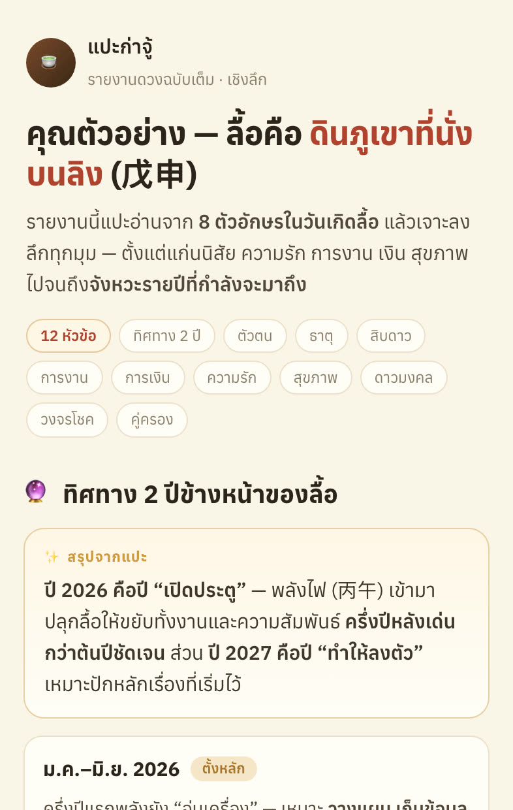
แชตกับอาแปะ
ห้องแชต streaming เบสจากวันเกิด — ปักหมุด/เปลี่ยนชื่อ/ลบ/แชตใหม่ + starter prompts (ภาพรวม/การงาน/ความรัก/เงิน)
Korean Saju Engine
คำนวณ 4 เสา · 오행 · 십신 · 격국 · 용신 · 대운/세운 จากฐาน KASI จริง แก้ 진태양시 ตาม longitude
ปฏิทินดวง personalized
forecast รายวัน/รายยามตามดวงผู้ใช้ — ไฮไลต์วันดี/ระวัง, ฤกษ์ยามราย ชม. → deep-link คุยกับแปะเรื่องวันนั้น
Onboarding + ผังธาตุ
กรอกวัน·เวลา·เมืองเกิด (city picker → longitude) → สร้างผังสาจู แสดง 4 เสา + สมดุลธาตุ (오행 balance)
Multi-profile
ดูดวงให้คนอื่นได้ — สลับโปรไฟล์ (active profile), เพิ่มคนใหม่, แต่ละคนมีผังสาจู + ห้องแชตของตัวเอง
รายงานดวงเต็ม + Reveal
สร้างรายงานดวงฉบับเต็ม + หน้า reveal พร้อม share card (html-to-image) และเสียงอาแปะเล่า (TTS)
Auth + โควตา atomic
Google + Email/Password (merge-by-email), หักโควตาด้วย Postgres function แบบ atomic + ledger append-only + RLS
Payment + Admin หลังบ้าน
Stripe consumable (99฿ = 100 คำถาม) เติมผ่าน webhook idempotent + admin dashboard: ลูกค้า/โควตา/รายได้/cost
หน้าตา — แชตกับอาแปะ
เปิดแอป → เห็นผังธาตุของตัวเอง → คุยกับอาแปะได้เลย บนจอเดียว (mobile-first)
| เสา | 時 ยาม | 日 วัน | 月 เดือน | 年 ปี |
|---|---|---|---|---|
| ก้าน·กิ่ง | 癸巳 | 丙寅 | 丙子 | 己巳 |
งานออกแบบ UI & Design System
มองแปะก่าจู้ในมุม Product Designer — ระบบ token, หน้าจอจริงจาก flow, และเหตุผลเบื้องหลังทุกการตัดสินใจด้าน UX
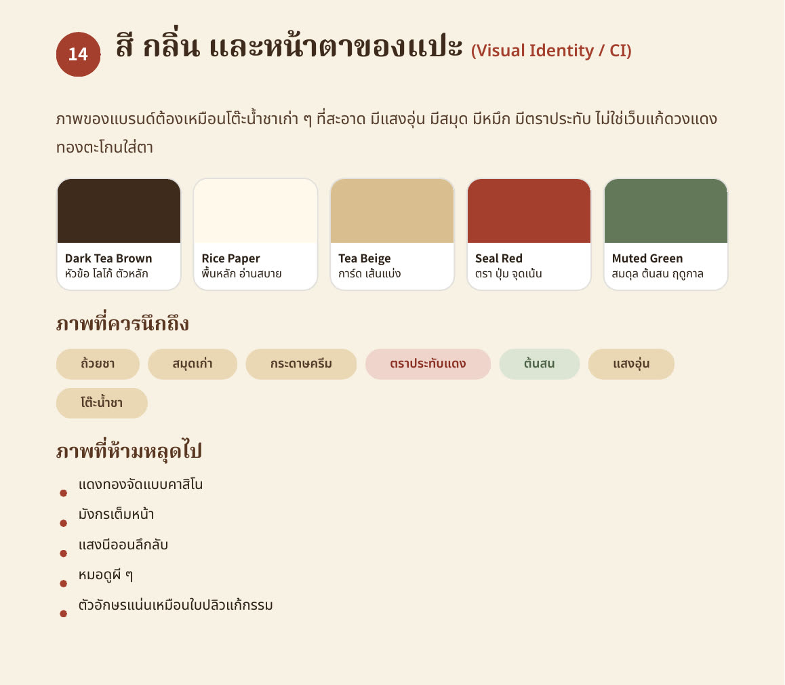
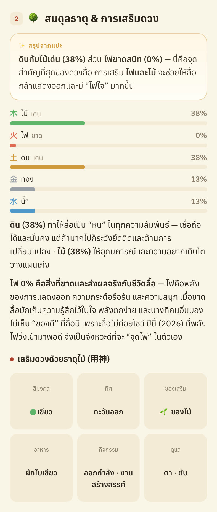
Mobile-first แล้ว letterbox ที่ 768px
คนมาหาแปะบนมือถือเกือบทั้งหมด ออกแบบ 393 ก่อน แล้วขยับ 768 → 1440
ทำไม: บนจอใหญ่จัดกลาง (cap 768) ไม่ยืด layout ให้โล่งเก้อ — คงบรรยากาศ "โต๊ะน้ำชา" ที่สงบ ไม่ฝืนทำ desktop gridAccessibility floor ที่ไม่ยอมลด
Base font ≥ 16px, touch target ≥ 44px, contrast ≥ 4.5:1 ทุก text/สีปุ่ม
ทำไม: กลุ่มผู้ใช้กว้าง อ่านคำอ่านยาว ๆ บนมือถือ — ตัวเล็กหรือปุ่มชิดกันคือ barrier จริง ไม่ใช่แค่ nice-to-haveMicrocopy พูดด้วยเสียง "อาแปะ"
Loading = "แปะกำลังชงคำอ่านให้ ใจเย็นก่อนนะ" · Error = "ไอ้หยา ระบบสะดุดนิดหน่อย ลองใหม่นะ"
ทำไม: state ที่คนหงุดหงิดที่สุด (รอ/พัง) คือจุดที่ character ต้องอยู่ — ไม่ทำให้ผู้ใช้รู้สึกผิดตอนกรอกพลาดผลอ่านเป็นการ์ด ไม่ใช่กำแพงข้อความ
ศัพท์ 오행/십신/격국 map เป็นไทยก่อนโชว์ + ซอยคำอ่านยาวเป็นท่อน/การ์ด + starter prompts
ทำไม: ต่อให้ engine แม่นแค่ไหน ถ้าเทข้อความก้อนเดียวคนก็ไม่อ่าน — visual hierarchy ทำให้ศาสตร์ที่ลึกกลายเป็นเรื่องเข้าใจง่ายHack กับปัญหา
6 โจทย์ที่ต้องคิดทางแก้เอง — ความแม่นของศาสตร์เกาหลี + การคุม AI + เงินที่พลาดไม่ได้
เวลามาตรฐานเกาหลีอิงเส้นญี่ปุ่น — เสาชั่วโมงเพี้ยน
KST อิงเมอริเดียน 135° (ญี่ปุ่น) แต่โซลอยู่ 126.98° — เวลาสุริยะจริงช้ากว่า ~32 นาที เอา KST มาคิดเสาชั่วโมงตรง ๆ เสาผิด
korean-saju ที่แก้ 진태양시 ตาม longitude ของเมืองเกิด + อ้าง 절기/입춘 boundary จาก KASI + แยก 야자시/조자시 — verify ตรง 100% กับ 35,000 วันถ้าให้ AI คำนวณดวง มันมโนตัวเลข
โมเดลภาษาตอบเลขดวงแบบมั่นใจแต่ผิด — จะเชื่อคำทำนายไม่ได้ถ้าฐานตัวเลขมั่ว
รัน engine เกาหลี (Python) ร่วมกับ Next.js
เว็บเป็น TypeScript/Next.js แต่ศาสตร์คำนวณอยู่ในแพ็กเกจ Python — จะเอามารันบน serverless เดียวกันยังไง
/api/*.py) — inject korean_saju/src เข้า sys.path, แพ็กเกจ 0 dependency จึง bundle ง่าย, Next.js เรียกผ่าน fetch ภายใน แล้ว cache ผลลง DBกันโกงโควตา + race condition ตอนหักเลข
ถ้าหักโควตาฝั่ง client แก้ได้เอง / ยิงพร้อมกันหลาย request อาจหักพลาดหรือติดลบ + เติมเงินซ้ำจาก webhook ที่มาซ้ำ
consume_question() หัก free/paid แบบ atomic ใน query เดียว + RLS เขียนได้เฉพาะ service-role + quota_ledger append-only + Stripe webhook idempotent ด้วย stripe_session_id uniqueศาสตร์เป็นฮันจา + AI ต้องอบอุ่นไม่ขู่
ผล engine เป็น 오행/십신/격국 ล้วน คนอ่านไม่ออก — และ AI default มักฟันธง/ทางการเกินไป ไม่ใช่เสียงอาแปะ
ปฏิทินเดือน = คำนวณหลายสิบวัน ช้า + เปลือง
เปิดปฏิทินมุมมองเดือนต้อง forecast ทุกวัน ถ้าเรียก Python ใหม่ทุกครั้งที่เปิด ทั้งช้าและเปลือง
daily_forecast_cache — เปิดปฏิทินเช็ค cache ก่อน ไม่มีค่อยเรียก engine แล้วเก็บไว้Design Decision ที่ตั้งใจเลือก
ขอบเขตที่จงใจ "ไม่ทำ" สำคัญพอ ๆ กับสิ่งที่ทำ
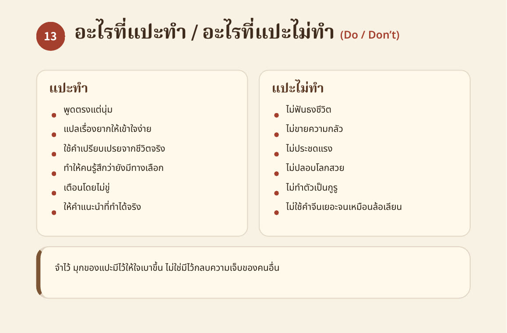
แปะก่าจู้จงใจ "อ่านดวงเป็นกระจก ไม่ฟันธงชะตา" — ไม่ขายของมงคล ไม่ขายความกลัว เหลือทางเลือกให้คนฟังเสมอ · engine คำนวณ AI เล่า (แยกหน้าที่กัน hallucination) · mobile-first cap 768px จัดกลางจอ ไม่ฝืนทำ desktop layout · โควตาเป็น consumable ไม่ผูกมัด subscription · มี disclaimer + 18+ ขอบเขตชัดตั้งแต่ต้น = implement ตรงและ maintain ง่าย
อ่านดวงเป็นกระจก
สะท้อนให้เห็นตัวเอง ไม่ฟันธง ไม่ขายความกลัว
Engine คำนวณ · AI เล่า
แยกหน้าที่เด็ดขาด กัน AI มโนตัวเลข
Mobile-first ≤768
จัดกลางจอ (letterbox) ไม่ฝืนทำ desktop
99฿ consumable
เติมครั้งเดียว ไม่หมดอายุ ไม่ผูกมัด sub
Knowledge Domain ที่แข็งขึ้น
5 พื้นที่ความรู้ที่ระดับเราขยับขึ้นจริงจากการทำโปรเจกต์นี้
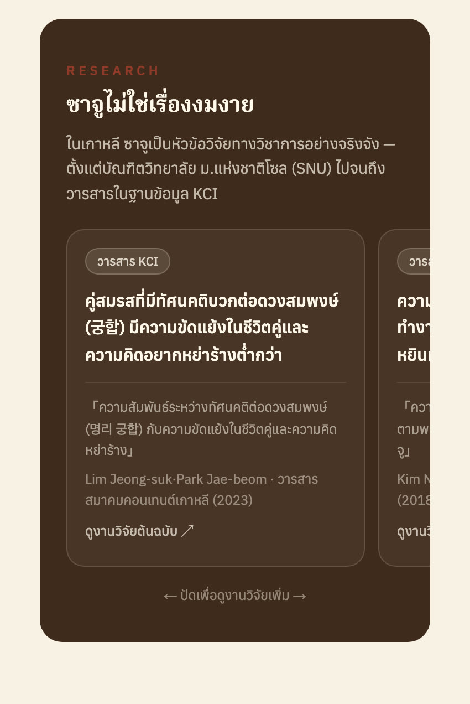
เข้าใจ 4 เสา (연·월·일·시), 오행 (5 ธาตุ), 십신, 격국, 용신, 대운/세운, และเหตุผลเชิงดาราศาสตร์เบื้องหลัง (진태양시, 절기, 입춘 boundary) — ลึกพอจะแปลงเป็น data model + UX ได้ บทเรียน: domain knowledge ที่ลึกจริงคือสิ่งที่ทำให้ product น่าเชื่อถือ ไม่ใช่แค่ UI สวย
ทำ App Router (RSC), Supabase Auth (Google + Email/Password + merge-by-email), RLS ทุกตาราง, และหักโควตาด้วย Postgres function แบบ atomic บทเรียน: Supabase ตัวเดียวคุม DB + Auth + security surface ได้ — ลด moving parts ทำให้ทีมเล็กปล่อยเร็ว
เชื่อม engine Python (korean-saju, 0 dependency) เข้ากับ Next.js ผ่าน Vercel Python function + sys.path injection แล้ว cache ผลลง DB บทเรียน: เลือกภาษาให้เหมาะกับงาน — คำนวณดาราศาสตร์คือของ Python ไม่ต้องฝืนเขียนใหม่ใน TS
ทำชั้น provider ที่สลับ Gemini → OpenAI → template fallback ได้ที่ไฟล์เดียว, streaming, prompt caching, และกัน hallucination ด้วยการ inject ข้อเท็จจริงจาก engine + character/system prompt บทเรียน: คุม AI ด้วย "ขอบเขต + ข้อเท็จจริง" ไม่ปล่อยให้มันคิดเลขเอง
ออกแบบ Stripe consumable + webhook idempotent + quota_ledger append-only + snapshot ราคา ณ ตอนซื้อ (แก้ราคาภายหลังไม่กระทบประวัติเก่า) บทเรียน: อะไรที่เกี่ยวกับเงิน ต้อง atomic + server-only + idempotent เสมอ ไม่มีข้อยกเว้น